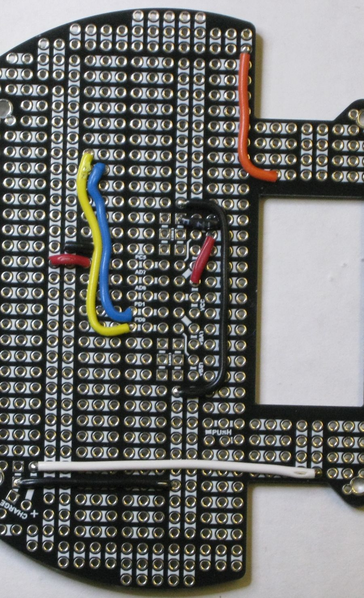
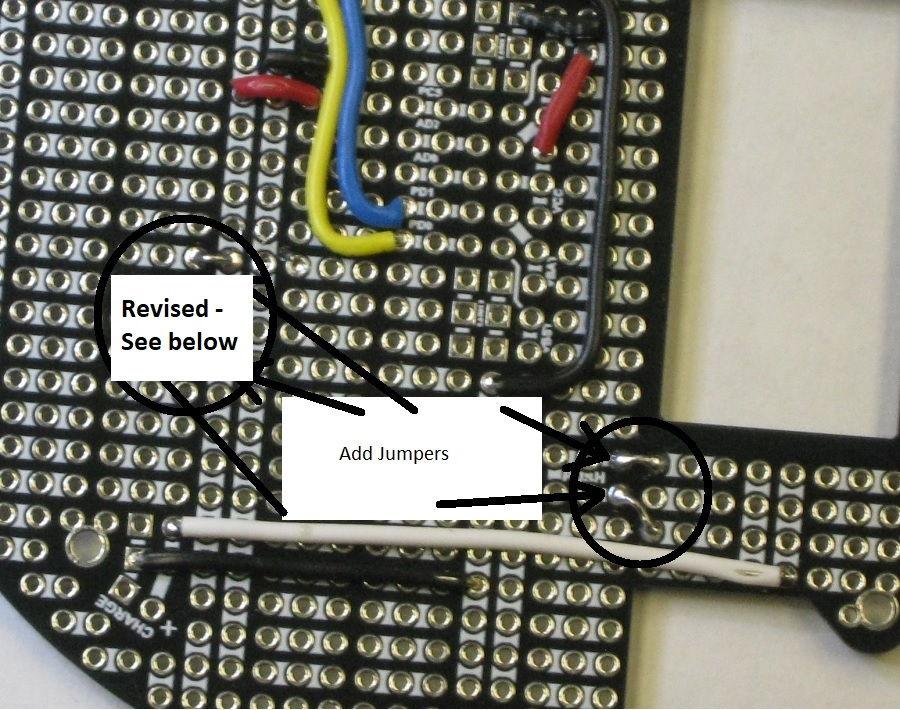
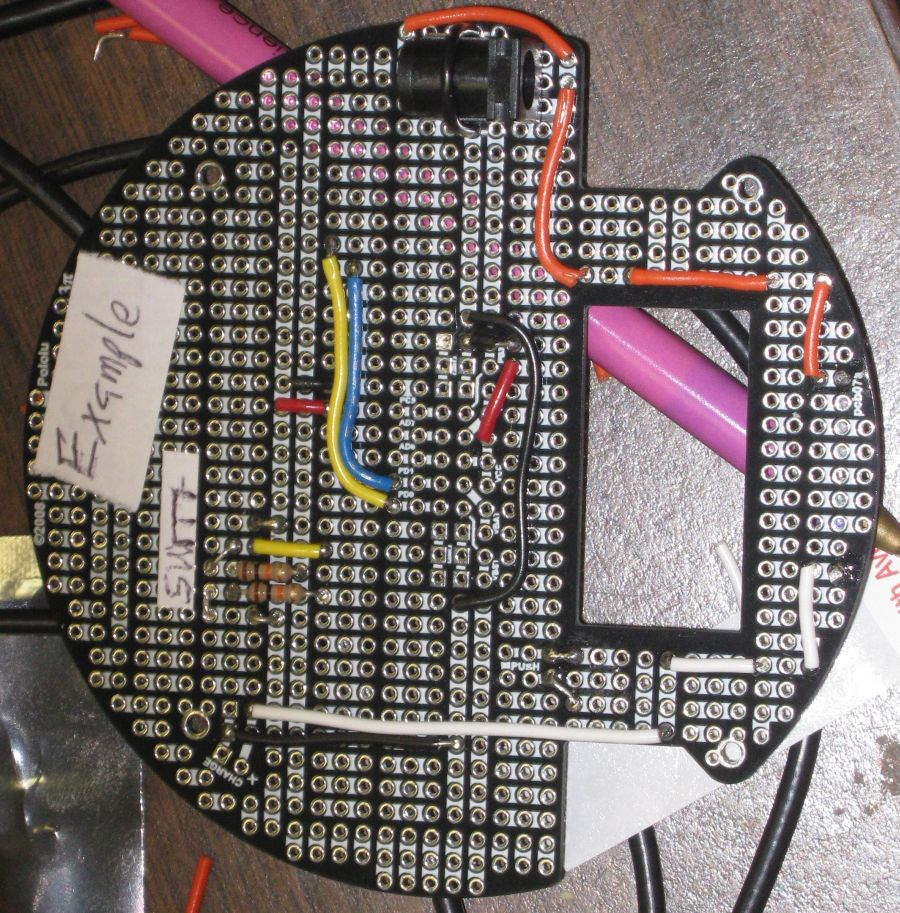
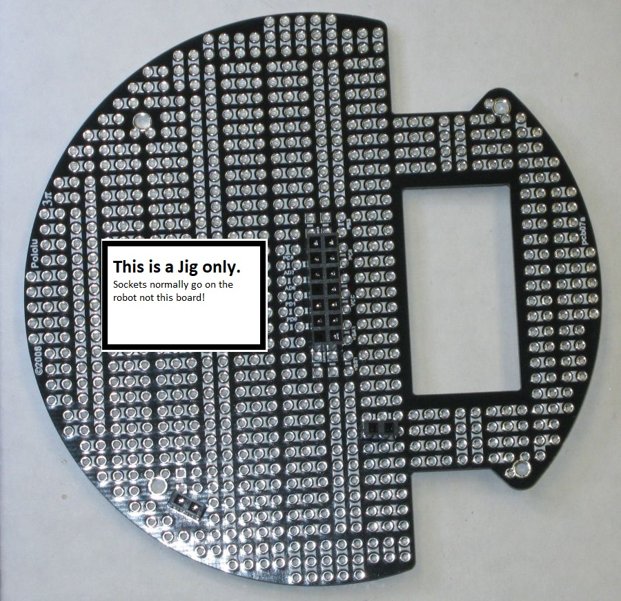
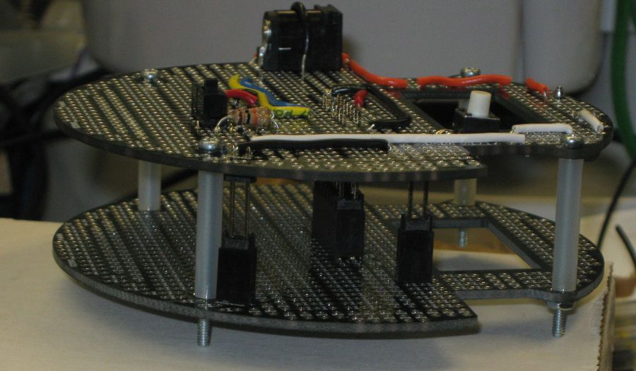
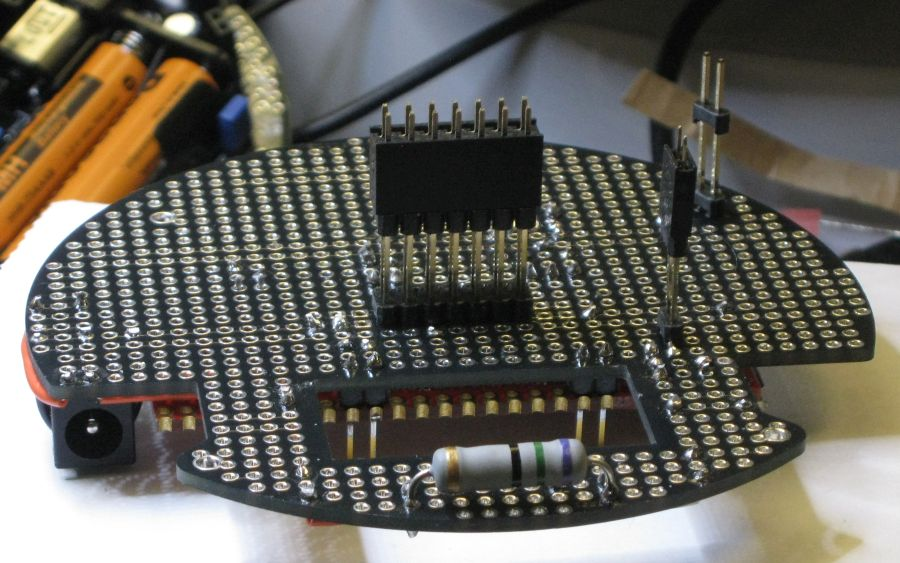
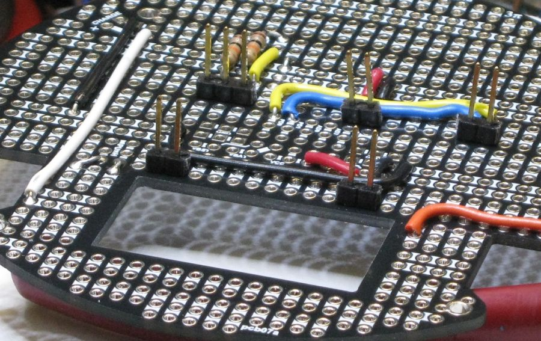

There are five very short jumpers to add. A suggestion is made in the next section to alter the arrangement of jumpers.

A change was made here from the prototype.
Example layout with switch before adjusting jumpers. Note that the photo does not illustrate the ground connection of the resistor because the lead is folded under the resister in this shot.
 images
images
Power jack not shown in this image.

Power Jack shown here.

Current limiting resistor on underside of board.

The pins of the board interconnect headers are long. A jig was made to hold long interconnect headers strait.

The long board interconnect headers are then put on the jig sockets.
{wrong image. need new photo}
The expansion board is fitted over the jig to solder the board interconnect headers.

The expansion board is separated from the jig and sockets for the new robot added to the pins.

The expansion board can then be mounted on the robot and the sockets soldered in place.

One way to get the Header pins in strait is to place them in the correct holes in the expansion board and then add the Xpress board. At this point the Pins are soldered into the Xpress board and not yet to the expansion board. Note the Xpress board must remain removable to solder in very long headers for expansion to robot interconnect.

Xpress board added. Photo taken just before soldering long pins.